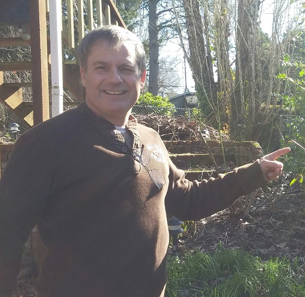
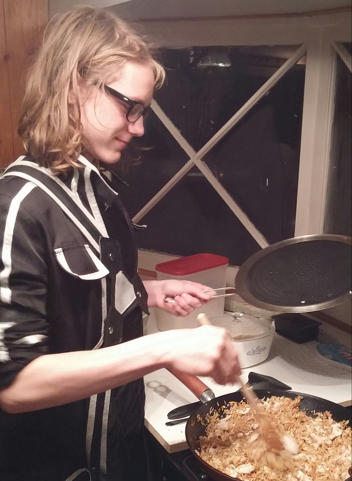

About Me:
These are a few of my favorite people:
My boyfriend, Chris
Chris recently bought a fixer-upper in Milwaukie that had been sitting empty for almost 7 years. The large yard was completely overgrown, primarily with blackberry bushes. Here he is pointing out the buds on some of the rosebushes he found under all those blackberries.
My daughter, Becky

My camera-shy daughter, Becky is a recent college-graduate (with a BA in German) and is working on establishing herself as an artist. She likes writing, drawing and painting, and making music.
My son, Johnathan
Johnathan is a sophomore in high school and enjoys video games, cooking, and rock climbing. Here he is trying out one of his recipes from his international foods class to contribute to our Thanksgiving dinner.